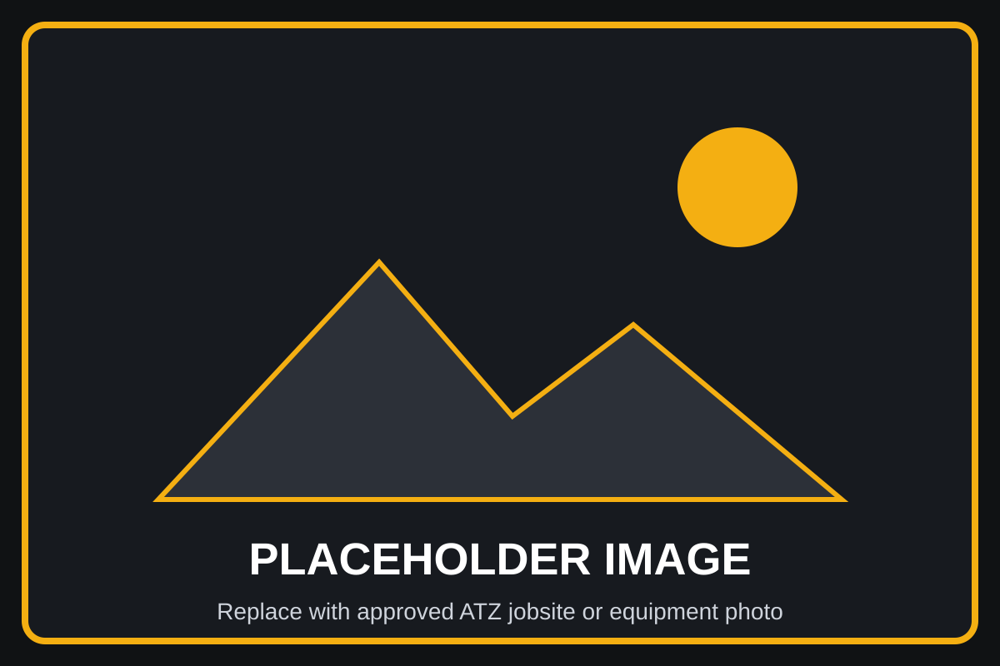

One Monthly Invoice
ATZ helps consolidate site facility services into one monthly invoice, making it easier for project teams to manage billing, estimating, vendor communication, and administrative tracking throughout the life of the job.
Construction Site Facilities & Jobsite Support
ATZ coordinates temporary offices, lab trailers, portable restrooms, dumpsters, fencing, utilities, internet, phone service, maintenance, repairs, and demobilization through one convenient point of contact.

Why contractors choose ATZ
Construction projects require more than equipment and labor. They also require temporary offices, utilities, restrooms, fencing, communication services, waste support, maintenance, and final demobilization. ATZ helps simplify those moving parts by coordinating jobsite facility support through a single point of contact.
ATZ helps consolidate site facility services into one monthly invoice, making it easier for project teams to manage billing, estimating, vendor communication, and administrative tracking throughout the life of the job.
Temporary offices, utilities, internet, phones, restrooms, fencing, dumpsters, and other site support items can be coordinated to help projects start efficiently and stay organized from the first day on site.
Instead of managing several separate vendors for basic jobsite needs, project teams can work with ATZ to coordinate multiple facility services through one communication channel.
Construction site facility coordination
ATZ was started in 2013 to bring a convenient service to the construction industry by simplifying bidding and streamlining field facility processes. Construction teams already have enough to manage between schedules, crews, inspections, subcontractors, and changing jobsite conditions. ATZ helps reduce the administrative burden connected to temporary facilities and site support services.
From startup through closeout, ATZ helps coordinate the items project teams need to keep a jobsite functional. That includes temporary office trailers, lab trailers, utilities, internet and phone service, restrooms, dumpsters, fencing, maintenance, repairs, and demobilization planning.
Learn About ATZServices
ATZ supports contractors, project managers, owners, inspectors, and field teams by coordinating the temporary facilities and support services needed on active construction sites. Each project has different requirements, and ATZ helps organize those needs into a more manageable process.
Construction office trailers and temporary office space help project teams manage schedules, meetings, documentation, communication, and daily field operations from an organized onsite location.
Laboratory trailers support testing, quality control, inspection activities, and project documentation while keeping essential project functions close to active construction work.
Portable restroom coordination supports workforce needs, site readiness, project cleanliness, and ongoing service requirements throughout the life of the construction project.
Dumpster and waste support coordination helps construction teams maintain safer, cleaner, and more organized jobsites as material and debris needs change throughout the project.
Temporary fencing helps establish project boundaries, support access control, improve site organization, and protect equipment, materials, workers, and the public.
Utility and electrical coordination helps temporary offices, lab trailers, communication systems, and jobsite support services become functional when project teams need them.
Frequently Asked Questions
ATZ helps coordinate temporary construction offices, lab trailers, portable restrooms, dumpsters, temporary fencing, utilities, internet and phone service, furniture, maintenance, repairs, and demobilization support for active construction projects.
Construction projects often require multiple vendors for site facilities and support services. A single point of contact can reduce administrative work, simplify communication, and help project teams stay focused on construction progress.
Temporary offices, utilities, restrooms, fencing, and other support services should be reviewed as early as possible during project planning. Early coordination can help reduce startup delays and improve site readiness.
Yes. ATZ helps coordinate facility needs from project startup through active construction, maintenance, repairs, and final demobilization. This supports a more organized process from the beginning of the job through closeout.
Additional Project Support
Many jobsites need more than temporary offices and field facilities. Explore additional project support from related companies while keeping ATZ focused on site facility coordination.
Excavation, earthwork, utilities, grading, and site preparation support for projects that need the ground prepared before facilities arrive.
Visit Nicon Excavation →Heavy haul transportation, oversized load logistics, permitting support, and specialized transport for buildings and equipment.
Visit Space Movers →Send ATZ your project information and service needs to start the quote process.
Request a Quote